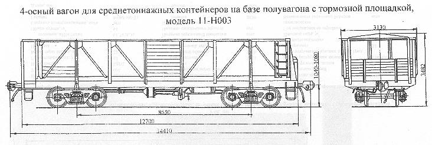

Назначение: для перевозки среднетоннажных контейнеров
Параметры
| Номер проекта | РП-337 |
| Технические условия | |
| Модель вагона | 11-Н003 |
| Тип вагона | 921 |
| Изготовитель | ВЧД |
| Грузоподъемность, т | 33 |
| Масса тары вагона, т | 22,4 |
| Нагрузка: статическая осевая, кН(тс) |
128,38(13,1) |
| погонная, кН/м(тс/м) | 42,574(3,63) |
| Объем кузова, м³ | |
| Скорость конструкционная, км/ч | 120 |
| Габарит | 0-ВМ(01-Т) |
| База вагона, мм | 8650 |
| Длина, мм: по осям сцепления автосцепок |
14410 |
| по концевым балкам рамы | 12700 |
| Ширина максимальная, мм | 3130 |
| Высота от уровня верха головок рельсов, мм максимальная |
3482 |
| до уровня пола | 1390 |
| Количество осей, шт. | 4 |
| Модель 2-осной тележки | 18-100 |
| Наличие переходной площадки | есть |
| То же с ручным тормозом | есть |
| Наличие стояночного тормоза | нет |
| Внутренние размеры кузова, мм: ширина |
2960 |
| длина погрузочной площадки | 12500 |
| Год постановки на серийное производство | |
| Возможность установки буферов | есть |